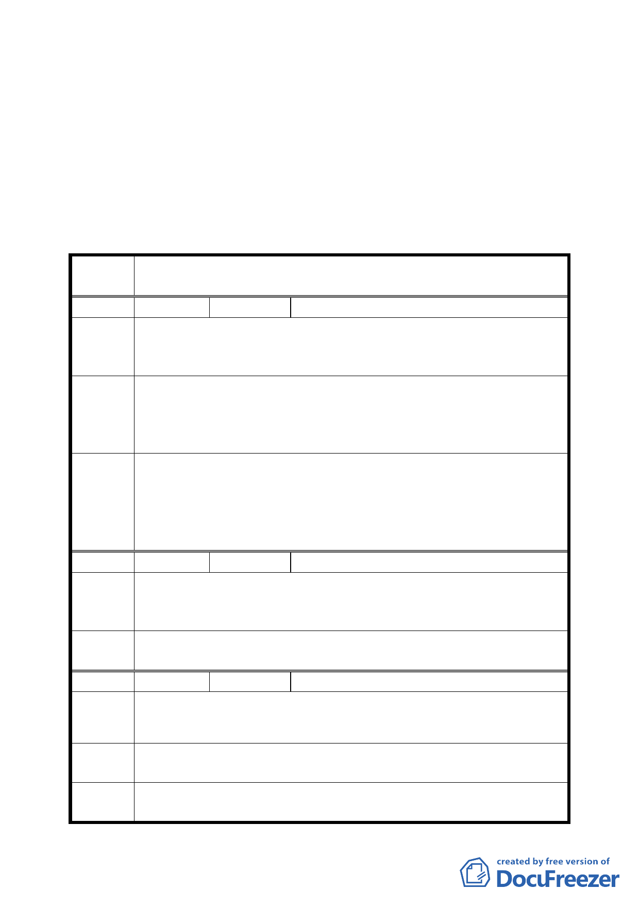

四、有關展會中心與現有展館暨 B、C 區間設置人工平台之課題，
尚需進一步深入探討，暫予保留，現階段不列入本計畫內容。
五、除依上開及上次會議決議外，其餘照案通過。
六、公民團體陳情意見詳如後附綜理表。
臺北市都市計畫委員會公民或團體陳所提意見綜理表
案
名
配合第二代展會中心變更臺北市南港經貿園區特定專用區 C12、
C13 街廓商業區及周邊商業區細部計畫案
編號 １
陳情人 廖文珮
陳情
由
理
1.二代會展中心臨三重路與南港路一段交叉路口即 137 巷至 171
巷均為三十年以上老舊房屋，請併入計畫案檢討範圍（為經貿園
區與第二代展會中心門戶）。
1.更新地區編號 A、B、C 區容積是否可移轉至 137 巷至 171 巷之
建 議 辦 區域。
法 2.由市府成立都市更新公司專案主導本區域都市更新作業
3.取消容積逐年遞減之規定
1.有關 137 巷至 171 巷間區域業經市府列入為優先更新地區可逕
委員會
決議
依都市更新相關規定辦理。
2.市府已針對成立更新公司乙案進行研議。
3.有關取消容積逐年遞減之規定，另於該地區通盤檢討案中進行
檢討修正。
編號 ２
陳情人 陳澄雄
建議辦
法
南港區三重埔段 341-1、341-48、148-1、149-1、150-1、151-1、
152-1、153-1、155-1、158-1、59—1 等地號徵收作為南港國小
使用，現該用地變更做為商業用地，請依法返還。
委員會
決議
依土地徵收條例相關規定辦理。
編號 ３
陳情人 王澤燿
陳情
由
理
這是塊複雜的土地，歷經數代的轉換。
建 議 辦 轉換擁有者時，能夠減免相關賦稅，如贈予稅、契稅、土地增值稅、
法 過戶稅等。
委員會
決議
有關減免稅賦問題，請參考都市更新條例中相關規定。
3